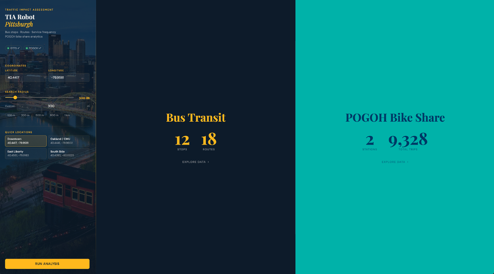

Transit data tools
- Role
- Led development at THI; solo rebuild for Pittsburgh
- When
- THI original; Pittsburgh version 2025
- Built with
- Python, Flask, Pandas, Matplotlib, Contextily, GTFS, HTML/CSS/JS
TIA Robot: a transit report generator, built twice
Every traffic impact assessment starts with the same chores: find the bus stops near a site, list the routes, check service frequency, pull bike-share data, and turn it all into charts.
At THI I led development of an internal tool that pulled data from Taiwan's open government transit APIs and generated the dashboards, charts, maps, and report summaries automatically. The code stayed with the company when I left, so I rebuilt it from scratch in Pittsburgh using Pittsburgh Regional Transit's GTFS feed and POGOH bike-share data from WPRDC. Enter a coordinate and a radius, and it returns stop maps, route tables, a service-frequency heatmap, and bike-share usage in about 10 to 20 seconds.
The original version reduced manual reporting effort by 80%. The Pittsburgh version runs end to end on public data, and the code is open.
